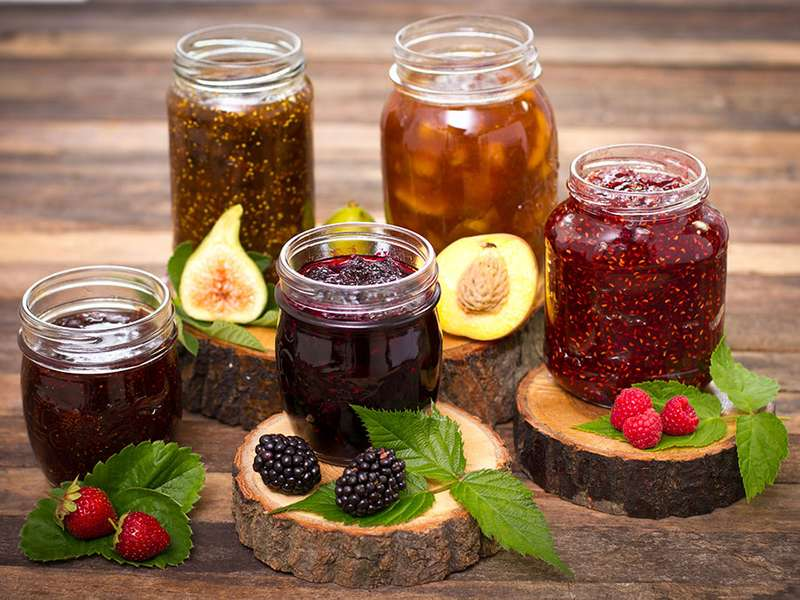

Jams & Jelly
Our jams and jellies are made only of the finest produce, all locally grown right here at Barry's Berry Farm. We use the best techniques to create delicious jams, jellies, marmalade, and preserves. When you open a jar of our sweet berry goodness, you'll taste the difference.
Our products are prepared when the fruit is at it's freshest, and you can tell. Perfect on toast, PB&J's crackers, and baked goods, our jam and jelly is as versatile as it is tasty. But don't take our word for it, come down and give it a try!